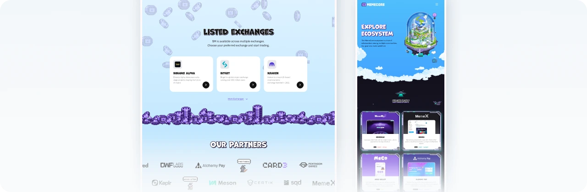
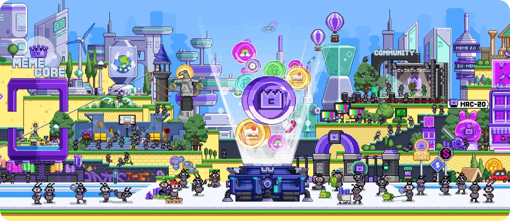

PROBLEM 1
Hidden navigation and no clear starting point

The first screen showed only graphics, and pages were hidden behind a hover interaction. In testing, 3 of 5 couldn’t find the roadmap.
Introduced an AI-driven workflow to rebuild the site in 5 days, cutting page size by 94% and bounce by 2.6×, then scaled it company-wide.


TEAM
1 Frontend Engineer
1 Backend Engineer
3 Illustrators
1 Growth Lead
2 Marketers
MY ROLE
Product Management
End-to-end Product Design
Front-end Implementation (AI-assisted)
Interaction Design
TIMELINE
Nov 2025 - Jun 2026
TOOLS
Figma
Claude Code
LightRoom
After Effects
MemeCore is a Web3 startup building an ecosystem around its meme coin, M. As the business expanded, its corporate website became a key resource for prospective investors and partners to explore the project.
However, visitors struggled to find key information, while slow page loading disrupted the experience. The redesign aimed to improve usability and performance while preserving MemeCore's visual identity.
As the sole product designer and product manager, I led the redesign, from UX strategy and information architecture to AI-assisted implementation, collaborating with engineers and illustrators. The redesign reduced page size by 94% and bounce rate by 20%. I completed the final implementation in 5 days using AI, introducing a workflow later adopted company-wide.

MemeCore is a Web3 startup behind M, a community-driven coin built to fix the trust problem in meme coins. Its platforms and events keep the community engaged long after the hype.

Early on, flashy GIF illustrations helped MemeCore stand out in a crowded crypto market, growing its community to 600K+ and event participation to 3.2M+. After major exchange listings and a top-20 market cap, the site needed to shift from grabbing attention to building credibility.

Despite MemeCore’s growth, skepticism around meme coins remained. Investors and partners kept saying its direction was unclear. The cause was the site: it had limited key information and no clear hierarchy, so the Growth & Marketing team had to explain the project in every meeting.
“So, what kind of project is MemeCore? I visited
the website, but I still don’t understand what it does.”- Prospective Partner
“Given the scale of its past events, it seems well-funded. But I’m still concerned, it’s a meme coin.”- MemeCore Investor
“The project strategy feels too abstract, making it seem focused mainly on short-term price growth.”- Crypto VC
Six months of Google Analytics and Clarity data showed where users left. A usability test with 5 people showed why.
As both PM and product designer, I took on both problems, from design to code.
The first screen showed only graphics, and pages were hidden behind a hover interaction. In testing, 3 of 5 couldn’t find the roadmap.

At 48.6MB, the site was 16× heavier than an average page. Clarity showed 24% of visitors left before it finished loading.
The content itself was worth reading, but many users left before ever reaching it. As the business strategy became clearer after launch, I saw an opportunity to surface key information earlier and make it easier to navigate.

With the team balancing multiple projects, I prioritized changes by impact and effort and split the scope into three phases. I shaped the IA with Growth & Marketing, then aligned each phase with illustrators and developers.
JUL - AUG 2025
Fix the structure first
OCT - DEC 2025
Adapt to new business goals
MAY - JUN 2026
Scale and speed up
To build a clear hierarchy, I analyzed three sources. Users' frequent questions showed what to surface first, the business model set the priorities, and Web3 services like Sui and Monad showed familiar navigation patterns.


To decide what the homepage should show first, I worked with the Growth and Marketing teams to rank users' most common questions and the company's key messages, then built the new landing page around that order.
Pages were hidden inside an illustrated map and appeared only on hover, making key content hard to find.
Key projects and business messages appear in order of importance, each linked to its detail page.
I reframed the debate from aesthetics to business impact, and the team agreed on one rule: interaction for attention, simple illustrations for understanding.
"Simpler visuals will make the information much clearer."
"But it could weaken MemeCore's core identity."
"A beautiful site means nothing if users can't get in.
Let's keep the illustrations, but give each one a clear job."
I used scroll interactions only at moments where we needed to hold their attention.
Opening: Scroll motion draws users into the story so they keep scrolling past the first screen.
$M exchange: Brings attention back to the $M exchange section, a business-critical part of the site.
In information-heavy sections, I kept one consistent layout so illustrations only support the content.
Users could scan faster while the brand stayed recognizable.

I compared three months before and after the redesign, with similar traffic in both periods. After the landing page became information-first, fewer users left immediately, and more continued to detail pages.
Bounce rate
- 9.2%
Detail-page visits
+ 21%
We had already shrunk the GIF assets, but the site still loaded slowly. Microsoft Clarity showed that pages were too slow to respond: about 17% of visitors rage-clicked, and session replays showed users on slower networks struggling to load them. A Lighthouse score of 55, well below the 90 benchmark, confirmed we needed to go further.

Midway through the project, our frontend developer moved to another urgent initiative. Instead of pausing or cutting scope, I took over implementation: I connected Claude Code to the Figma API and GitLab, built the frontend, and later handled some backend work. Testing designs directly in the browser cut handoffs and rework.

Because I owned the code, I could fix this directly instead of waiting for a handoff. Each scene was a single heavy GIF that couldn’t be optimized further, so I rethought where motion was actually needed. The site became much lighter, kept its intended look, and no longer needed a loading screen.
The whole scene was a single GIF, so it couldn't be optimized further.

A static, compressed
WebP background.
Each key asset cut out and animated in CSS.


The optimization raised the Lighthouse score from 55 to 92, cut page weight by 94%, and lowered loading drop-off from 24% to 6%. The vibe-coding workflow also reduced development and QA time for updates from about a month to five days. I documented the process from a designer's perspective and shared it company-wide, where it became an internal best practice.

Performance score +37
55→92
Smaller page size
17x
Loading drop-off -18pp
24%→6%
As both product manager and product designer for the first time, I led the project from planning to launch, ahead of schedule. It earned me the company's highest performance rating, but I was proudest of getting the team to launch despite losing frontend support.
Looking back, I found two gaps in how I planned. First, I treated agreement as capacity. Teammates said yes to a fast timeline, but they were also managing several other projects. Second, I planned for the expected, not the variable. Urgent requests often came up at our company, and without a buffer, the team felt rushed midway. Going forward, I'll check each person's workload before setting timelines and build in buffer for unexpected requests, so speed stays sustainable.


Create your own AI appearance


Redesigned Interaction Mode to make it easier to discover and sustain AI conversations, increasing entry by 5× and average conversation time by 5.5×.

Redesigned HMI training for workers with limited digital experience, doubling satisfaction and reducing negative VOC by 15%.